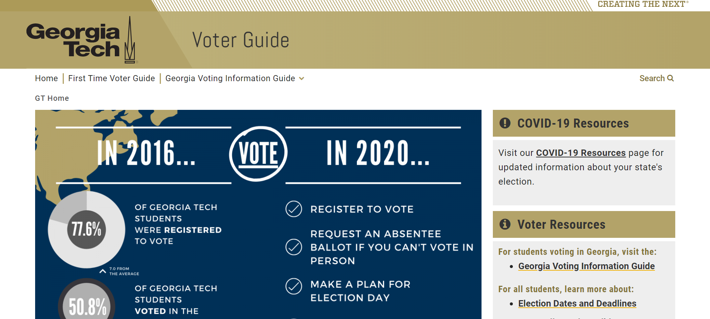

VoterTech

GT VoterTech VIP team
January 2020 - May 2020
Votertech is a research team at Georgia Tech focusing on understanding impediments to voting at GT and developing technologies to encourage voter turnout among college students.
After creating a survey and analyzing the results, we noticed that students struggled with understanding who would be on the ballot and what their policies are. I then joined the Ballot Information subteam to try to create a solution to this issue.
We found a great website for students to learn more about candidates called BallotReady.org and to make the site more informative, we submitted information we found about candidates and their stances on issues. At the end of the semester, we launched an official voting information website through Georgia Tech: vote.cae.gatech.edu